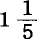

第十三章机器和大工业
1.机器的发展
约翰·斯图亚特·穆勒在他的《政治经济学原理》一书中说道：
“值得怀疑的是，一切已有的机械发明，是否减轻了任何人每天的辛劳。”(1)
但是，这也决不是资本主义使用机器的目的。像其他一切发展劳动生产力的方法一样，机器是要使商品便宜，是要缩短工人为自己花费的工作日部分，以便延长他无偿地给予资本家的工作日部分。机器是生产剩余价值的手段。
生产方式的变革，在工场手工业中以劳动力为起点，在大工业中以劳动资料为起点。因此，首先应该研究，劳动资料如何从工具转化为机器，或者说，机器和手工业工具有什么区别。这里只能谈谈显著的一般的特征，因为社会史上的各个时代，正如地球史上的各个时代一样，是不能划出抽象的严格的界限的。
数学家和力学家说，工具是简单的机器，机器是复杂的工具，某些英国经济学家也重复这种说法。他们看不到二者之间的本质区别，甚至把简单的机械力如杠杆、斜面、螺旋、楔等等也叫作机器。(2)的确，任何机器都是由这些简单的力构成的，不管它怎样改装和组合。但是从经济学的观点来看，这种说明毫无用处，因为其中没有历史的要素。另一方面，还有人认为，工具和机器的区别在于：工具的动力是人，机器的动力是不同于人力的自然力，如牲畜、水、风等等。(3)按照这种说法，在各个极不相同的生产时代存在的牛拉犁是机器，而一个工人用手推动的、每分钟可织96000个线圈的克劳生式回转织机不过是工具了。[293]而且，同一台织机，用手推动时是工具，用蒸汽推动时就成为机器了。既然畜力的使用是人类最古老的发明之一，那么，机器生产事实上就应该先于手工业生产了。当1735年约翰·淮亚特宣布他的纺纱机的发明，并由此开始18世纪的工业革命时，他只字未提这种机器将不用人而用驴去推动，尽管它真是用驴推动的。淮亚特的说明书上说，这是一种“不用手指纺纱”的机器。(4)
所有发达的机器都由三个本质上不同的部分组成：发动机，传动机构，工具机或工作机。发动机是整个机构的动力。它或者产生自己的动力，如蒸汽机、热力机、电磁机等；或者接受外部某种现成的自然力的推动，如水车受落[295]差水推动，风磨受风推动等。传动机构由飞轮、转轴、齿轮、蜗轮、杆、绳索、皮带、联结装置以及各种各样的附件组成。它调节运动，在必要时改变运动的形式（例如把垂直运动变为圆形运动），把运动分配并传送到工具机上。机构的这两个部分的作用，仅仅是把运动传给工具机，由此工具机才抓住劳动对象，并按照一定的目的来改变它。机器的这一部分——工具机，是18世纪工业革命的起点。在今天，每当手工业或工场手工业生产过渡到机器生产时，工具机也还是起点。
如果我们仔细地看一下工具机或真正的工作机，那么再现在我们面前的，大体上还是手工业者和工场手工业工人所使用的那些器具和工具，尽管它们在形式上往往有很大改变。不过，现在它们已经不是人的工具，而是一个机构的工具或机械工具了。或者，整部机器只是旧手工业工具多少改变了的机械翻版，如机械织机(5)；或者，装置在工作机机架上的工作器官原是老相识，如纺纱机上的锭子，织袜机上的针，锯木机上的锯条，切碎机上的刀等等。这些工具同工作机的真正机体的区别，甚至表现在它们的出生上：这些工具大部分仍然由手工业或工场手工业生产，然后才装到由机器生产的工作机的机体上。(6)因此，工具机是这样一种机构，它在取得适当的运动后，用自己的工具来完成过去工人用类似的工具所完成的那些操作。至于动力是来自人还是本身又来自另一台机器，这并不改变问题的实质。在真正的工具从人那里转移到机构上以后，机器就代替了单纯的工具。即使人本身仍然是原动力，机器和工具之间的区别也是一目了然的。人能够同时使用的工具的数量，受到人天生的生产工具的数量，即他自己身体的器官数量的限制。在德国，起初有人试图让一个纺纱工人踏两架纺车，也就是说，要他同时用双手双脚劳动。[298]这太紧张了。后来有人发明了脚踏的双锭纺车，但是，能同时纺两根纱的纺纱能手几乎像双头人一样罕见。相反地，珍妮机[299]一开始就能用12—18个纱锭，织袜机同时可用几千枚织针，等等。同一工作机同时使用的工具的数量，一开始就摆脱了一个工人的手工业工具所受到的器官的限制。
作为单纯动力的人和作为真正操作工人的人之间的区别，在许多手工业工具上表现得格外明显。例如，在纺车上，脚只起动力的作用，而在纱锭上工作即引纱和捻纱的手，则从事真正的纺纱操作。正是手工工具的这后一部分，首先受到了工业革命的侵袭。最初，工业革命除了使人从事用眼看管机器和用手纠正机器的差错这种新劳动外，还使人发挥纯机械的动力作用。相反地，原来只是用人当简单动力的那些工具，如推磨(7)、抽水、拉风箱、捣臼等等，却最早使用了牲畜、水、风(8)作为动力。这些工具部分地在工场手工业时期，个别地甚至在更早以前，就已经发展为机器，但并没有引起生产方式的革命。在大工业时期可以看出，这些工具甚至在它们的手工业形式上就已经是机器了。例如，1836—1837年荷兰人用来抽干哈勒姆湖水的水泵，就是按普通唧筒的原理设计的，不同的只是，它的活塞不是用人手来推动，而是用巨大的蒸汽机来推动。[304]在英国，现在有时还把铁匠用的极不完善的普通风箱的把手同蒸汽机连接起来，而变成机械风箱。17世纪末工场手工业时期发明的、一直存在到18世纪80年代初的那种蒸汽机本身(9)，并没有引起工业革命。相反地，正是工具机的创造才使蒸汽机的革命成为必要。一旦人不再用工具作用于劳动对象，而只是作为动力作用于工具机，人的肌肉充当动力的现象就成为偶然的了，人就可以被风、水、蒸汽等等代替了。当然，这种变更往往会使原来只以人为动力而设计的机构发生重大的技术变化。今天，所有还必须为自己开辟道路的机器，像缝纫机、制面包机等等，如果它们的性能一开始就不排斥小规模应用，那就要设计成既适合用人作动力，也适合用纯机械作动力。
作为工业革命起点的机器，是用这样一个机构代替只使用一个工具的工人，这个机构用许多同样的或同种的工具一起作业，由一个单一的动力来推动，而不管这个动力具有什么形式。(10)在这里我们就有了机器，但它还只是机器生产的简单要素。
工作机规模的扩大和工作机上同时作业的工具数量的增加，需要一种较大的发动机构。这个机构要克服它本身的阻力，就必须有一种比人力强大的动力，更不用说人是一种进行划一运动和连续运动的很不完善的工具了。假定人只是作为简单的动力起作用，也就是说，一种工具机已经代替了人的工具，那么现在自然力也可以作为动力代替人。在工场手工业时期遗留下来的一切大动力中，马力是最坏的一种，这部分地是因为马有它自己的头脑，部分地是因为它十分昂贵，而且能在工厂内使用的范围很有限。(11)但在大工业的童年时期，马是常被使用的。除了当时的农业家的怨言外，一直到今天仍沿用马力来表示机械力这件事，就是证明。风太不稳定，而且无法控制；此外，在大工业的发源地英国，水力的应用在工场手工业时期就已经占有优势。早在17世纪，就有人试用一架水车来推动两盘上磨，也就是两套磨。但是这时，传动机构规模的扩大同水力不足发生了冲突，这也是促使人们更精确地去研究摩擦规律的原因之一。同样，靠磨杆一推一拉来推动的磨，它的动力的作用是不均匀的，这又引出了飞轮(12)的理论和应用。飞轮后来在大工业中起了非常重要的作用。大工业最初的科学要素和技术要素就是这样在工场手工业时期发展起来的。阿克莱的翼锭纺纱机最初是用水推动的。但使用水力作为主要动力有种种困难。它不能随意增大，在缺乏时不能补充，有时完全枯竭，而主要的是，它完全受地方的限制。(13)直到瓦特发明第二种蒸汽机，即所谓双向蒸汽机后，才找到了一种原动机，它消耗煤和水而自行产生动力，它的能力完全受人控制，它可以移动，同时它本身又是推动的一种手段；这种原动机是在城市使用的，不像水车那样是在农村使用的，它可以使生产集中在城市，不像水车那样使生产分散在农村(14)，它在工艺上可得到普遍的应用，在地址选择上不太受地点条件的限制。瓦特的伟大天才表现在1784年4月他所取得的专利的说明书中，他没有把自己的蒸汽机说成是一种用于特殊目的的发明，而把它说成是大工业普遍应用的发动机。他在说明书中指出的用途，有一些例如蒸汽锤）过了半个多世纪以后才被采用。[308]但是他当时曾怀疑，蒸汽机能否应用到航海上。1851年，他的后继者，博尔顿—瓦特公司，在伦敦工业展览会上展出了远洋轮船用的最大的蒸汽机。
只是在工具由人的有机体的工具转化为一个机械装置即工具机的工具以后，发动机才取得了一种独立的、完全摆脱人力限制的形式。于是，我们以上所考察的单个的工具机，就降为机器生产的一个简单要素了。现在，一台发动机可以同时推动许多工作机。随着同时被推动的工作机数量的增加，发动机也在增大，传动机构也跟着扩展成为一个庞大的装置。
现在，必须把许多同种机器的协作和机器体系这两件事区别开来。
在前一场合，整个制品是由同一台工作机完成的。工作机完成各种不同的操作，这些操作原来是由一个手工业者用自己的工具（例如织布业者用自己的织布机）来完成的，或者是由若干手工业者独立地或作为一个手工工场的成员用各种工具顺次来完成的。(15)例如，在现代的信封手工工场中，一个工人用折纸刀折纸，另一个工人涂胶水，第三个工人折边，预备印上图样，第四个工人把图样印好，等等。每个信封，每经过一道局部操作，就要转一次手。一台信封制造机一下子完成所有这些操作，而且一小时制成3000个或更多的信封。[309] 1862年伦敦工业展览会上展出的一台美国纸袋制造机，可以切纸、涂胶水、折纸，每分钟生产300个纸袋。[310]在工场手工业中分成几种操作顺次进行的整个过程，现在由一台由各种工具结合而成的工作机来完成。不管这样一台工作机只是一个比较复杂的手工工具的机械复制品，还是由工场手工业各种专门化了的简单工具的结合，在工厂内，即在以机器生产为基础的工场内，总有简单协作重新出现，这种协作首先表现为同种并同时共同发生作用的工作机在空间上的集结（这里撇开工人不说）。例如，许多机械织机集结在同一厂房内便组成一个织布工厂，许多缝纫机集结在同一厂房内便组成一个缝纫厂。但这里存在着技术上的统一，因为许多同种的工作机都是同时并同等地从共同的原动机的心脏跳动中得到搏动，这是通过传动机构传送来的，而传动机构对这些工作机来说也有一部分是共同的，因为它不过是分出一些特殊的分支同每个工具机相连结。正像许多工具只组成一个工作机的器官一样，许多工作机现在只组成同一个发动机构的同样的器官。
但是，只有在劳动对象顺次通过一系列互相连结的不同的阶段过程，而这些过程是由一系列各不相同而又互为补充的工具机来完成的地方，真正的机器体系才代替了各个独立的机器。在这里，工场手工业所特有的以分工为基础的协作又出现了，但这种协作现在表现为各个局部工作机的结合。各种局部工人的专门工具，例如毛纺织手工工场中的弹毛工、梳毛工、起毛工、纺毛工等等所使用的工具，现在转化为各种专门化的工作机的工具，而每台工作机又在结合的工具机构的体系中成为一个特殊的器官，执行一种特殊的职能。在最先采用机器体系的部门中，工场手工业本身大体上为机器体系对生产过程的划分和组织提供了一个自然基础。(16)但在工场手工业生产和机器生产之间一开始就出现了一个本质的区别。在工场手工业中，单个的或成组的工人，必须用自己的手工工具来完成每一个特殊的局部过程。如果说工人会适应这个过程，那么这个过程也就事先适应了工人。在机器生产中，这个主观的分工原则消失了。在这里，整个过程是客观地按其本身的性质分解为各个组成阶段，每个局部过程如何完成和各个局部过程如何结合的问题，由力学、化学等等在技术上的应用来解决(17)，当然，在这里也像以前一样，理论的方案需要通过实际经验的大量积累才臻于完善。每一台局部机器依次把原料供给下一台，由于所有局部机器都同时动作，产品就不断地处于自己形成过程的各个阶段，不断地从一个生产阶段转到另一个生产阶段。在工场手工业中，局部工人的直接协作，使各个特殊工人小组形成一定的比例数，同样，在有组织的机器体系中，各局部机器不断地互相交接工作，也使各局部机器的数目、规模和速度形成一定的比例。结合工作机——现在是各种单个工作机和各组工作机的一个有组织的体系——所完成的整个过程越是连续不断，即原料从整个过程的最初阶段转到最后阶段的中断越少，从而，原料越是不靠人的手而靠机构本身从一个生产阶段传送到另一个生产阶段，结合工作机就越完善。如果说，在工场手工业中，各特殊过程的分离是一个由分工本身得出的原则，那么相反地，在发达的工厂中，起支配作用的是各特殊过程的连续性。
一个机器体系，无论是像织布业那样，以同种工作机的单纯协作为基础，还是像纺纱业那样，以不同种工作机的结合为基础，一旦它由一个自动的原动机来推动，它本身就形成一个大自动机。整个体系可以由例如蒸汽机来推动，虽然个别工具机在某些动作上还需要工人，例如，在采用自动走锭纺纱机以前，走锭纺纱机就需要工人发动，而精纺到现在都还是这样；或者，机器的某些部分必须像工具一样，靠工人操纵才能进行工作，例如，在机器制造上，在滑动刀架还未转化为自动装置以前就是这样。当工作机不需要人的帮助就能完成加工原料所必需的一切运动，而只需要人从旁照料时，我们就有了自动的机器体系，不过，这个机器体系在细节方面还可以不断地改进。例如，断纱时使纺纱机自动停车的装置，梭中纬纱用完时使改良蒸汽织机立即停车的自动开关，都完全是现代的发明。现代造纸工厂可以说是生产的连续性和应用自动原理的范例。在纸张的生产上，我们可以详细而有益地研究以不同生产资料为基础的不同生产方式之间的区别，以及社会生产关系同这些生产方式之间的联系，因为德国旧造纸业为我们提供了这一部门的手工业生产的典型，17世纪荷兰和18世纪法国提供了真正工场手工业的典型，而现代英国提供了自动生产的典型，此外在中国和印度，直到现在还存在着这种工业的两种不同的古亚细亚的形式。
通过传动机由一个中央自动机推动的工作机的有组织的体系，是机器生产的最发达的形态。在这里，代替单个机器的是一个庞大的机械怪物，它的躯体充满了整座整座的厂房，它的魔力先是由它的庞大肢体庄重而有节奏的运动掩盖着，然后在它的无数真正工作器官的疯狂的旋转中迸发出来。
在专门制造蒸汽机、走锭纺纱机等等的工人出现以前，走锭纺纱机、蒸汽机等等就已经出现了，这正像在裁缝出现以前人就已经穿上了衣服一样。但是，沃康松、阿克莱、瓦特等人的发明之所以能够实现，只是因为这些发明家找到了相当数量的、在工场手工业时期就已准备好了的熟练的机械工人。这些工人中，一部分是各种职业的独立的手工业者，另一部分是联合在像前面所说的分工非常严格的手工工场内的。(18)随着发明的增多和对新发明的机器的需求的增加，一方面机器制造业日益分为多种多样的独立部门，另一方面制造机器的工场手工业内的分工也日益发展。这样，在这里，在工场手工业中，我们看到了大工业的直接的技术基础。工场手工业生产了机器，而大工业借助于机器，在它首先占领的那些生产领域排除了手工业生产和工场手工业生产。因此，机器生产是在与它不相适应的物质基础上自然兴起的。机器生产发展到一定程度，就必定推翻这个最初是现成地遇到的、后来又在其旧形式中进一步发展了的基础本身，建立起与它自身的生产方式相适应的新基础。正像在单个机器还要由人来推动时，它始终是一种小机器一样，正像在蒸汽机还没有代替现成的动力——牲畜、风甚至水以前，机器体系不可能自由发展一样，当大工业特有的生产资料即机器本身，还要依靠个人的力量和个人的技巧才能存在时，也就是说，还取决于手工工场内的局部工人和手工工场外的手工业者用来操纵他们的小工具的那种发达的肌肉、敏锐的视力和灵巧的手时，大工业也就得不到充分的发展。所以，且不说这样生产出的机器很昂贵，——这种情况作为自觉的动机支配着资本，——已经用机器进行生产的工业的扩大，以及机器向新的生产部门的渗入，仍完全取决于这样一类工人增加的情况，这类工人由于他们的职业带有半艺术性，只能逐渐地增加而不能飞跃地增加。但是，大工业发展到一定阶段，也在技术上同自己的手工业和工场手工业的基础发生冲突。发动机、传动机构和工具机的规模日益扩大；随着工具机摆脱掉最初曾支配它的构造的手工业型式而获得仅由其力学任务决定的自由形式，工具机的各个组成部分日益复杂、多样并具有日益严格的规则性；自动体系日益发展；难于加工的材料日益不可避免地被应用，例如以铁代替木材(19)；——所有这些都是自然发生的任务，要解决这些任务到处都碰到人身的限制。这些限制甚至工场手工业中的结合工人也只能在一定程度上突破，而不能从根本上突破。例如，像现代印刷机、现代蒸汽织机和现代梳棉机这样的机器，就不是工场手工业所能提供的。
一个工业部门生产方式的变革，会引起其他部门生产方式的变革。这首先涉及因社会分工而孤立起来以致各自生产一种独立的商品、但又作为一个总过程的各阶段而紧密联系在一起的那些工业部门。因此，有了机器纺纱，就必须有机器织布，而这二者又使漂白业、印花业和染色业必须进行力学和化学革命。同样，另一方面，棉纺业的革命又引起分离棉花纤维和棉籽的轧棉机的发明，由于这一发明，棉花生产才有可能按目前所需要的巨大规模进行。(20)但是，工农业生产方式的革命，尤其使社会生产过程的一般条件即交通运输手段的革命成为必要。正像以具有家庭副业的小农业和城市手工业为“枢纽”[312]（我借用傅立叶的用语）的社会所拥有的交通运输手段，完全不再能满足拥有扩大的社会分工、集中的劳动资料和工人以及殖民地市场的工场手工业时期的生产需要，因而事实上已经发生了变革一样，工场手工业时期遗留下来的交通运输手段，很快又转化为具有狂热的生产速度和巨大的生产规模、经常把大量资本和工人由一个生产领域投入另一个生产领域并具有新建立的世界市场联系的大工业所不能忍受的桎梏。因此，撇开已经完全发生变革的帆船制造业不说，交通运输业是逐渐地靠内河轮船、铁路、远洋轮船和电报的体系而适应了大工业的生产方式。但是，现在要对巨大的铁块进行锻冶、焊接、切削、镗孔和成型，又需要有庞大的机器，制造这样的机器是工场手工业的机器制造业所不能胜任的。
因此，大工业必须掌握它特有的生产资料，即机器本身，必须用机器来生产机器。这样，大工业才建立起与自己相适应的技术基础才得以自立。随着19世纪最初几十年机器生产的发展，机器实际上逐渐掌握了工具机的制造。但只是到了最近几十年，由于大规模的铁路建设和远洋航运事业的发展，用来制造原动机的庞大机器才产生出来。
用机器制造机器的最重要的生产条件，是要有能供给各种强度的力量同时又完全受人控制的发动机。蒸汽机已经是这样的机器但是，机器各部件所必需的精确的几何形状，如直线、平面、圆、圆柱形、圆锥形和球形，也同时要用机器来生产。在19世纪最初10年亨利·莫兹利发明了滑动刀架，解决了这个问题。这种刀架不久就改为自动式，经改装后从它最初被使用的旋床上移到其他制造机器的机器上。[313]这种机械装置所代替的不是某种特殊工具，而是人的手本身。以往必须用手把切削工具等等的刃对准或加在劳动材料如铁）上面，才能制造出一定的形状。现在有了这种装置，就能制造出机器各部件的几何形状，而且
“轻易、精确和迅速的程度是任何最熟练工人的富有经验的手都无法做到的”(21)。
如果我们现在考察一下机器制造业所采用的机器中构成真正工具机的部分，那么，手工业工具就再现出来了，不过规模十分庞大。例如，钻床的工作部分，是一个由蒸汽机推动的庞大钻头，没有这种钻头就不可能生产出大蒸汽机和水压机的圆筒。机械旋床是普通脚踏旋床的巨型翻版；刨床是一个铁木匠，它加工铁所用的工具就是木匠加工木材的那些工具；伦敦造船厂切割胶合板的工具是一把巨大的剃刀；剪裁机的工具是一把大得惊人的剪刀，它剪铁就像裁缝剪布一样；蒸汽锤靠普通的锤头工作，但这种锤头重得连托尔也举不起来。(22)[314]例如，内史密斯发明的这些蒸汽锤中，有一种重6吨多，从7英尺的高度垂直落在36吨重的铁砧上。它能毫不费劲地把一块花岗石打得粉碎，也能轻轻地一下一下地把钉子钉进柔软的木头里去。(23)[316]
劳动资料取得机器这种物质存在方式，要求以自然力来代替人力，以自觉应用自然科学来代替从经验中得出的成规。在工场手工业中，社会劳动过程的组织纯粹是主观的，是局部工人的结合；在机器体系中，大工业具有完全客观的生产有机体，这个有机体作为现成的物质生产条件出现在工人面前。在简单协作中，甚至在因分工而专业化的协作中，社会化的工人排挤单个的工人还多少是偶然的现象。而机器，除了下面要谈的少数例外，则只有通过直接社会化的或共同的劳动才发生作用。因此，劳动过程的协作性质，现在成了由劳动资料本身的性质所决定的技术上的必要了。
2.机器的价值向产品的转移
我们已经知道，由协作和分工产生的生产力，不费资本分文。(24)它是社会劳动的自然力。用于生产过程的自然力，如蒸汽、水等等，也不费分文。可是，正像人呼吸需要肺一样，人要在生产上消费自然力，就需要一种“人的手的创造物”[317]。要利用水的动力，就要有水车，要利用蒸汽的压力，就要有蒸汽机。利用自然力是如此，利用科学也是如此。电流作用范围内的磁针偏离规律，或电流绕铁通过而使铁磁化的规律一经发现，就不费分文了。(25)但是要在电报等方面利用这些规律，就需要有极昂贵的和复杂的设备。我们已经知道，工具并没有被机器排挤掉。它由人的有机体的小工具，通过扩大规模，增加数量，发展成为由人创造的机构的工具。(26)现在资本不要工人用手工工具去做工，而要工人用一个会自行操纵工具的机器去做工。因此，如果说大工业把巨大的自然力和自然科学并入生产过程，必然大大提高劳动生产率，这一点是一目了然的，那么生产力的这种提高并不是靠增加另一方面的劳动消耗换来的，这一点却决不是同样一目了然的。像不变资本的任何其他组成部分一样，机器不创造价值，但它把自身的价值转移到由它的服务所生产的产品上。就机器具有价值，从而把价值转给产品来说，它是产品价值的一个组成部分。机器不是使产品变便宜，而是按照它自身的价值使产品变贵。很明显，机器和发达的机器体系这种大工业特有的劳动资料，在价值上比手工业生产和工场手工业生产的劳动资料增大得无可比拟。
首先应当指出，机器总是全部地进入劳动过程，始终只是部分地进入价值增殖过程。它加进的价值，决不会大于它由于磨损而平均丧失的价值。因此，机器的价值和机器定期转给产品的价值部分，有很大的差别。作为价值形成要素的机器和作为产品形成要素的机器，有很大的差别。同一机器在同一劳动过程中反复使用的时期越长，这种差别就越大。诚然，我们已经知道，每一种真正的劳动资料或生产工具，总是全部地进入劳动过程，始终只是按照它每天平均的损耗而部分地进入价值增殖过程(27)。但是，使用和磨损之间的这种差别，在机器上比在工具上大得多，因为机器是由比较耐用的材料制成的，寿命较长；因为机器的使用要遵照严格的科学规律，能够更多地节约它的各个组成部分和它的消费资料的消耗；最后，因为机器的生产范围比工具的生产范围广阔无比。如果我们不算机器和工具二者每天的平均费用，即不算由于它们每天的平均损耗和机油、煤炭等辅助材料的消费而加到产品上的那个价值组成部分，那么，它们的作用是不需要代价的，同未经人类加工就已经存在的自然力完全一样。机器的生产作用范围越是比工具大，它的无偿服务的范围也就越是比工具大。只是在大工业中，人才学会让自己过去的、已经对象化的劳动的产品大规模地、像自然力那样无偿地发生作用。(28)
在考察协作和工场手工业时，我们知道，共同消费某些共同的生产条件（如建筑物等），比单个工人消费分散的生产条件要节约，因而能使产品便宜一些(29)。在机器生产的场合，不仅一个工作机的许多工具共同消费一个工作机的躯体，而且许多工作机共同消费同一个发动机和一部分传动机构。
如果机器的价值和机器转给日产品的价值部分之间的差额已定，那么这个价值部分使产品变贵的程度，首先取决于产品的数量，就像是取决于产品的面积。布莱克本的贝恩斯先生在1857年发表的一篇演讲中计算过：
“一实际的机械马力(30)可以推动450个自动走锭纺纱机纱锭及其附属设备，或者可以推动200个翼锭纺纱机纱锭，或者可以推动15台织宽40英布的织布机以及整经、浆纱等装置。”[319]
一蒸汽马力每天的费用及其所推动的机器的损耗，在第一种情况下是分配在450个走锭纺纱机纱锭的日产品上；在第二种情况下是分配在200个翼锭纺纱机纱锭的日产品上；在第三种情况下是分配在15台机械织机的日产品上。可见，转给一盎司棉纱或一码布的只是极小的一部分价值。前面举的蒸汽锤的例子也是这样。(31)因为蒸汽锤每天的磨损和煤炭的消耗等等是分配在它每天锤打的巨量的铁上，所以在每英担铁上只添加很小一部分价值；但如果用这个庞大的工具来钉小钉子，那么分配在每英担上的价值就会很大了。
如果工作机的作用范围已定，也就是说，工作机的工具数量已定，或者在涉及力的时候，工作机工具的规模已定，那么产品的数量就取决于工作机作业的速度，例如，取决于纱锭的转速或蒸汽锤每分钟锤击的次数。某些大蒸汽锤每分钟可锤70次；赖德的专利锻造机，用小蒸汽锤锻造纱锭，每分钟可锤700次。[320]
如果机器转给产品的价值的比率已定，那么这个价值部分的大小就取决于机器本身价值的大小。(32)机器本身包含的劳动越少，它加到产品上的价值也就越小。它转移的价值越小，它的生产效率就越高，它的服务就越接近自然力的服务。而用机器生产机器，会使机器的价值同机器的规模和作用相对而言降低下来。
比较分析一下手工业或工场手工业生产的商品的价格和机器生产的同种商品的价格，一般可以得出这样的结论：在机器产品中，由劳动资料转来的价值组成部分相对地说是增大了，但绝对地说是减少了。这就是说，它的绝对量是减少了，但它同产品（如一磅棉纱）的总价值相比较的量是增大了。(33)
很明显，如果生产一台机器所费的劳动，与使用该机器所节省的劳动相等，那么这只不过是劳动的变换，就是说，生产一个商品所需要的劳动总量没有减少，或者说，劳动生产力没有提高。但是，机器所费的劳动和它所节省的劳动之间的差额，或机器生产率的高低，显然不是由机器本身的价值和它所代替的工具的价值之间的差额来决定的。只要机器所费的劳动，从而机器加到产品上的价值部分，小于工人用自己的工具加到劳动对象上的价值，这种差额就一直存在。因此，机器的生产率是由它代替人类劳动力的程度来衡量的。根据贝恩斯先生的计算，由一蒸汽马力推动的450个走锭纺纱机纱锭及其附属设备，需要两个半工人看管(34)；每个自动走锭纺纱机纱锭在十小时工作日的情况下可纺出13盎司棉纱（平均纱支），因此两个半工人一星期可纺出磅棉纱。可见，大约366磅棉花（为了简便起见，我们撇开废棉不说）在转化为棉纱时，只吸收了150个劳动小时，或15个十小时工作日，而用纺车，一个手工纺工60小时纺13盎司棉纱，因此，同量的棉花就要吸收2700个十小时工作日，或27000个劳动小时。(35)在木板印花或手工印花这种旧方法被机器印花代替的地方，一台机器由一个成年男工或少年工看管，一小时印制的四色花布的数量，等于过去200个成年工人印制的数量[324]。(36)在1793年伊莱·惠特尼发明轧棉机以前，轧除一磅棉花的棉籽要花一个平均工作日。由于有了他的发明，一个黑人妇女每天可以轧100磅棉花，而且从那以后，轧棉机的效率又大有提高。[325]原来要花50分钱生产的一磅棉纤维，后来卖10分钱，而且利润更高，也就是说，包含的无酬劳动更多了。在印度，使用一种半机器式的工具——手工轧棉机，来使棉纤维与棉籽脱离。使用这种工具，一个男工和一个女工每天能轧28磅棉花。但使用几年前福布斯博士发明的手工轧棉机，2个成年男工和一个少年工每天可轧250磅棉花；[326]在用牛、蒸汽或水作动力的地方，只需要几个男女少年充当添料工。16台这样的机器，用牛来拉，每天能完成以前750个人一天平均的工作。(37)
前面已经说过，装在蒸汽犁上的蒸汽机在一小时内花费3便士或先令所完成的工作，等于66个人在一小时内花费15先令所完成的工作。(38)我又来引用这个例子，是为了反驳一种错误的见解。就是说，这15先令决不是这66个人一小时内加进的劳动的表现。如果剩余劳动和必要劳动之比为100%，那么，这66个工人一小时就生产30先令的价值，虽然其中只有33小时表现为他们自己的等价物，即表现为15先令的工资。因此，假定一台机器的所值等于它排挤的150个工人一年的工资，比方说3000镑，那么，这3000镑决不是这150个工人所提供的并加到劳动对象上的劳动的货币表现，而只是他们的年劳动中表现为他们工资的那部分劳动的货币表现。相反，机器的货币价值3000镑是生产机器时所耗费的全部劳动的表现，不管这一劳动按什么比例形成工人的工资和资本家的剩余价值。可见，即使机器的所值和它所代替的劳动力的所值相等，对象化在机器本身中的劳动，总是比它所代替的活劳动少得多。(39)
如果只把机器看作使产品便宜的手段，那么使用机器的界限就在于：生产机器所费的劳动要少于使用机器所代替的劳动。可是对资本说来，这个界限表现得更为狭窄。因为资本支付的不是所使用的劳动，而是所使用的劳动力的价值，所以，对资本说来，只有在机器的价值和它所代替的劳动力的价值之间存在差额的情况下，机器才会被使用。因为工作日中必要劳动和剩余劳动的比例，在不同的国家是不同的，而且在同一国家不同的时期，或者在同一时期不同的生产部门，也是不同的；其次，因为工人的实际工资有时降到他的劳动力价值以下，有时升到他的劳动力价值以上，所以，机器的价格和它所要代替的劳动力的价格之间的差额，可以有很大的变动，即使生产机器所必需的劳动量和机器所代替的劳动总量之间的差额保持不变。(40)但是，对资本家本身来说，只有前一种差额才决定商品的生产费用，并通过竞争的强制规律对他发生影响。因此，现在英国发明的机器只能在北美使用，正像16世纪和17世纪德国发明的机器只能在荷兰使用，18世纪法国的某些发明只能在英国使用一样。在一些较老的发达国家，机器本身在某些产业部门的使用，会造成其他部门的劳动过剩（李嘉图用的是redundancy of abour），以致其他部门的工资降到劳动力价值以下，从而阻碍机器的应用，并且使机器的应用在资本看来是多余的，甚至往往是不可能的，因为资本的利润本来不是靠减少所使用的劳动得来的，而是靠减少有酬劳动得来的。近几年来，在英国毛纺织业的某些部门中，童工显著减少，有的地方几乎完全被排挤掉了。为什么呢？因为工厂法规定童工必须实行两班制，一班劳动6小时，另一班劳动小时，或每班只劳动5小时。但是父母们不愿比以前出卖全日工更便宜地出卖半日工。因此半日工就被机器所代替。(41)在矿井禁止使用妇女和儿童（10岁以下的）以前，[328]资本认为，在煤矿和其他矿井使用裸体的妇女和少女，而且往往让她们同男子混在一起的做法，是完全符合它的道德规范的，尤其是它的总账的，所以直到禁止使用妇女和儿童以后，资本才采用机器。美国人发明了碎石机。英国人不采用这种机器，因为从事这种劳动的“不幸者”“wretch”是英国政治经济学用来称呼农业工人的术语）的劳动只有很小一部分是有报酬的，所以对于资本家说来，机器反而会使生产变贵。(42)在英国，直到现在还有时不用马而用妇女在运河上拉纤等等(43)，因为生产马和机器所需要的劳动是一个数学上的已知量，而维持过剩人口中的妇女所需要的劳动，却是微不足道的。因此，恰恰是英国这个机器国家，比任何地方都更无耻地为了卑鄙的目的而浪费人力。
3.机器生产对工人的直接影响
前面已经指出，大工业的起点是劳动资料的革命(44)，而经过变革的劳动资料，在工厂的有组织的机器体系中获得了最发达的形态。在研究人身材料怎样合并到这个客观有机体之前，让我们先来考察一下这种革命对工人本身的某些一般影响。
（a）资本对补充劳动力的占有。妇女劳动和儿童劳动
就机器使肌肉力成为多余的东西来说，机器成了一种使用没有肌肉力或身体发育不成熟而四肢比较灵活的工人的手段。因此，资本主义使用机器的第一个口号是妇女劳动和儿童劳动！这样一来，这种代替劳动和工人的有力手段，就立即转化为这样一种手段，它使工人家庭全体成员不分男女老少都受资本的直接统治，从而使雇佣工人人数增加。为资本家进行的强制劳动，不仅夺去了儿童游戏的时间，而且夺去了家庭本身惯常需要的、在家庭范围内从事的自由劳动的时间。(45)
劳动力的价值不只是决定于维持成年工人个人所必需的劳动时间，而且决定于维持工人家庭所必需的劳动时间。(46)机器把工人家庭的全体成员都抛到劳动市场上，就把男劳动力的价值分到他全家人身上了。因此，机器使男劳动力贬值了。购买例如有四个劳动力的一家人，也许比以前购买家长一个劳动力花费得多些，但现在四个工作日代替了原来的一个工作日，劳动力的价格按照四个工作日的剩余劳动超过一个工作日的剩余劳动的比例而下降了。现在，一家人要维持生活，四口人不仅要给资本提供劳动，而且要给资本提供剩余劳动。因此，机器从一开始，在增加人身剥削材料，即扩大资本固有的剥削领域(47)的同时，也提高了剥削程度。
机器还从根本上使资本关系的形式上的中介，即工人和资本家之间的契约发生了革命。在商品交换的基础上，第一个前提是资本家和工人作为自由人，作为独立的商品占有者而互相对立：一方是货币和生产资料的占有者，另一方是劳动力的占有者。(48)但是现在，资本购买未成年人或半成年人。从前工人出卖他作为形式上自由的人所拥有的自身的劳动力。现在他出卖妻子儿女。他成了奴隶贩卖者。(49)对儿童劳动的需求，在形式上也往往同美国报纸广告上常见的对黑奴的需求相似。例如，一个英国工厂视察员说：
“在我的管区的一个最重要的工业城市里，地方报纸的一条广告引起了我的注意，广告写道：兹征求12至20名少年，外貌要13岁以上。工资每周4先令。报名处……”(50)
这里之所以用“外貌要13岁”这句话，是因为按照工厂法规定，未满13岁的儿童只能劳动6小时。年龄必须经过合格医生的证明。因此，工厂主需要外表看来已满13岁的儿童。工厂主雇用的未满13岁的儿童人数屡次大幅度地减少，这在英国近20年来的统计材料中是令人惊讶的。根据工厂视察员本人的证词，这种情况大部分是由合格医生造成的，他们为迎合资本家的剥削欲望和父母的贩卖要求而虚报儿童的年龄。在声名狼藉的伦敦贝特纳尔格林区，每逢星期一和星期二的早晨，都有公开的集市，9岁以上的男女儿童就在那里把自己出租给伦敦的丝织厂。“一般的条件是，每周1先令8便士（归父母），2便士归我自己，外加茶点费。”契约仅以一周为限。这种集市上的情景和语言确实令人愤慨。(51)直到现在英国还有这样的事发生：妇女“把子女从贫民习艺所中领出来，以每周2先令6便士的价格出租给任何一个主顾”(52)。在大不列颠，不顾法律的规定，至少还有2000名儿童被自己的父母卖出去充当活的烟囱清扫机（虽然已经有机器可以代替他们）。(53)机器引起的劳动力买者和卖者之间的法的关系的革命，使全部交易本身失去了自由人之间的契约的外表，这就为后来英国议会提供了国家干涉工厂事务的法律上的根据。每当工厂法把以前不受约束的工业部门的儿童劳动限制为6小时的时候，工厂主总是一再抱怨说：有些父母会把儿童从受限制的工业部门中领出来，把他们卖给“劳动自由”还盛行的部门，即卖给那些迫使不满13岁的儿童像成年人一样从事劳动，因而付给他们较高的卖价的工业部门。但因为资本是天生的平等派，就是说，它要求把一切生产领域内剥削劳动的条件的平等当作自己的天赋人权，所以，儿童劳动在一个工业部门受到法律限制，就成为儿童劳动在另一个工业部门受到限制的原因。
前面已经指出，机器起初使儿童、少年像工人妻子一样在以机器为基础而产生的工厂内直接地受资本的剥削，后来使他们在所有其他工业部门内间接地受资本的剥削，而使他们的身体受到摧残。(54)因此在这里，我们只谈一点，就是工人子女出生后头几年的惊人的死亡率。在英格兰，有16个户籍区在100000个不满一周岁的儿童中每年平均的死亡人数只是9085人（其中有一个区只是7047人）；24个区是10000人至11000人；39个区是11000人至12000人；48个区是12000人至13000人；22个区超过20000人；25个区超过21000人；17个区超过22000人；11个区超过23000人；在胡、伍尔弗汉普顿、阿什顿安德莱恩和普雷斯顿超过24000人；在诺丁汉、斯托克波特和布拉德福德超过25000人；在威斯贝奇是26001人；在曼彻斯特是26125人。(55)1861年的一个官方医生调查报告指出：造成这样高的死亡率的原因，除了当地的情况外，主要是由于母亲外出就业，以及由此引起的对子女的照顾不周和虐待，例如饮食不适、缺乏营养、喂鸦片剂等等，另外，母亲还违反天性地虐待自己的子女，从而发生故意饿死和毒死的事件。(56)相反地，在“妇女最少就业”的农业区，“死亡率则最低”(57)。但是，1861年的调查委员会却得出了一个出人意料的结论：在北海沿岸的一些纯农业区，不满一周岁的儿童的死亡率几乎赶上了名声最坏的工厂区。因此，朱利安·汉特医生被派去就地研究这种现象。他的报告收在《公共卫生第6号报告》中。(58)在此以前人们认为，是疟疾和低洼的沼泽地区所特有的其他疾病使儿童大批死亡。但调查却得出了完全相反的结论：
“把冬天是沼泽地夏天是贫瘠草地的土地变成肥沃的谷物耕地，这是消灭疟疾的原因，但也就是这个原因造成了非常高的婴儿死亡率。”(59)
汉特医生在这些地区询问过70个开业医生，他们对这一点的意见“惊人地一致”。事实上，随着土地耕作的革命，采用了工业制度。
“同少年男女在帮伙里一起劳动的已婚妇女，为了挣一些钱，被一个出租整个帮伙的叫作‘帮头’的人，交给租地农场主支配。这些帮伙往往到离本村许多英里以外的地方去；早晚都可以在路上看到他们，妇女们穿着短裙和短上衣、靴子，有时穿长裤，表面上很健壮有力，但由于放荡成性而败坏了，她们喜欢这种忙碌的独立的生活方式，而毫不考虑这会给她们家里瘦弱的子女带来多么不幸的后果。”(60)
工厂区的各种现象在这里又重现了，而且暗地杀害儿童和让儿童服鸦片剂的现象比工厂区还要厉害。(61)
英国枢密院医官、《公共卫生》报告主编西蒙医生说：
“我了解工业中大量使用成年妇女所造成的恶果，所以每当我看到这种现象都有理由感到深恶痛绝。”(62)
工厂视察员罗·贝克在一份官方报告中疾呼：
“禁止任何有家的已婚妇女在任何工厂里干活，对于英国的工厂区来说，确实会是一件幸事。”(63)
关于对妇女劳动和儿童劳动进行资本主义剥削所造成的精神摧残，弗·恩格斯在他所著的《英国工人阶级状况》中以及其他的著作家已经作了详尽的阐述，因此我在这里只是提一下。把未成年人变成单纯制造剩余价值的机器，就人为地造成了智力的荒废，——这和自然的无知完全不同，后者把智力闲置起来，并没有损坏它的发展能力、它的自然肥力本身，——这种智力的荒废甚至使英国议会最后不得不宣布，在一切受工厂法约束的工业中，受初等教育是“在生产上”使用14岁以下儿童的法定条件。工厂法关于所谓教育的条款措辞草率；由于缺少行政机构，这种义务教育大部分仍然徒有其名；工厂主反对这个教育法令，使用种种阴谋诡计回避这个法令；——这一切明显地暴露出资本主义生产的精神。
“只有立法机关应受谴责，因为它颁布了一个骗人的法令，这个法令表面上关心儿童的教育，但没有一条规定能够保证达到这个口头上的目的。它只是规定儿童每天必须有若干小时〈3小时〉被关在叫作学校的地方的四壁之内，规定儿童的雇主每周必须从一个以男教师或女教师身份签字的人那里得到证明书。”(64)
在1844年的修正工厂法颁布以前，上学证明书由男教师或女教师在上面划一个十字来代替签字，并不是少见的现象，因为他们自己也不会写字。
“我访问一所颁发这种证明书的学校，教师的无知使我非常惊奇，所以我问他：‘先生，请问您识字吗？’他的回答是：‘唉，认识一点点’。为了申辩，他又补充一句：‘不管怎样，我总比我的学生强’。”
在拟定1844年的法令的时候，工厂视察员揭发了这种叫作学校的地方的丑事。但他们不得不承认这种学校发的证明书在法律上是完全有效的。他们努力的全部成果就是，从1844年起，
“教师必须在上学证明书上亲笔填写数字，并且必须亲笔签上自己的姓名”(65)。
苏格兰工厂视察员约翰·金凯德爵士谈到了他公务中类似的经历。
“我们访问的第一所学校是由一个叫安·基林的夫人主办的。当我请她把她的姓拼读出来时，她马上就出了错，她先说了一个C，但马上改正说，她的姓的第一个字母是K。然而，我查看她在上学证明书上的签字时，发现她的姓的写法不一，她的笔迹说明她根本没有教书的能力。她自己也承认，她不会填写名册……在另一所学校，我发现教室长15英尺宽10英尺，里面有75个儿童，不知在叽叽喳喳讲些什么。”(66)“然而，儿童只得到上学证明书而受不到教育的现象，不仅存在于这些受罪的地方。在许多有合格师资的学校，由于各种年龄（从3岁起）的儿童乱哄哄地混杂在一起，教师也几乎是白费力气。教师的收入在最好的情况下也少得可怜，这些收入完全依靠儿童交纳的便士，因此他尽可能把大量学生塞进一个教室里。此外，学校设备简陋，缺乏书籍和其他教具，沉闷难闻的空气对贫苦的儿童产生有害的影响。我到过很多这样的学校，看见一排一排的儿童无所事事，但这就被证明是上学了，在官方的统计中，这些儿童算是受过教育的。”(67)
在苏格兰，工厂主竭力排斥那种必须上学的儿童。
“这足以证明，工厂主对教育条款是十分憎恶的。”(68)
这种情况在受一种特别工厂法限制的棉布等印花厂中表现得荒诞离奇。按照这项法令的规定，
“每个儿童在到这种印花厂就业以前，必须在他就业第一天前的6个月内至少上学30天，并且不得少于150小时。他在印花厂就业期间，每过6个月仍须上学30天，而且是150小时……上学时间应在早晨8点至下午6点之间。每天上学的时数少于小时或超过5小时，都不得算入150小时之内。在一般情况下，儿童在30天内上下午都上学，每天5小时，30天期满，如果达到规定的总数150小时，用他们自己的话来说，读完了书，那他们就又回到印花厂，在那里再劳动6个月；到下一个上学期限，他们又去上学，直到又读完了书为止……许多按规定上过150小时学的儿童，在印花厂呆了6个月以后再回到学校时，情形和刚上学时一样……他们自然又把前一次上学所学到的东西忘得一干二净。还有一些印花厂，上学的事完全取决于工厂的营业需要。每6个月内所必须达到的时数是由每次3至5小时零碎凑成的，而且可能分散在这6个月内。例如，一天是从上午8点到11点上学，另一天是从下午1点到4点上学，在儿童有些天不上学之后，突然又从下午3点到6点上学；他可能连续上3、4天或一个星期，然后又停3个星期或整整一个月。而当他的雇主偶然不需要他的那些零星日子里，他又回去混一些小时；因此，儿童可说是被推来推去，从学校推到工厂，再从工厂推到学校，直到凑满150小时为止”(69)。
机器使儿童和妇女以压倒的多数加入结合劳动人员中，终于打破了男工在工场手工业时期仍在进行的对资本专制的反抗。(70)
（b）工作日的延长
如果说机器是提高劳动生产率，即缩短生产商品的必要劳动时间的最有力的手段，那么，它作为资本的承担者，首先在它直接占领的工业中，成了把工作日延长到超过一切自然界限的最有力的手段。一方面，它创造了新条件，使资本能够任意发展自己这种一贯的倾向，另一方面，它创造了新动机，使资本增强了对他人劳动的贪欲。
首先，在机器上，劳动资料的运动和活动离开工人而独立了。劳动资料本身成为一种工业上的永动机，如果它不是在自己的助手——人的身上遇到一定的自然界限，即人的身体的虚弱和人的意志，它就会不停顿地进行生产。因此，劳动资料作为资本——而且作为资本，自动机在资本家身上获得了意识和意志——就受这样一种欲望的激励，即力图把有反抗性但又有弹性的人的自然界限的反抗压到最低限度。(71)而且，由于在机器上劳动看来很容易，由于妇女和儿童比较温顺驯服，这种反抗无疑减小了。(72)
我们已经知道，机器的生产率同机器转移到制品上的价值组成部分的大小成反比。机器执行职能的期限越长，分担机器加进的价值的产品量就越大，机器加到单个商品上的价值部分就越小。而机器的有效寿命，显然取决于工作日的长度或每天劳动过程的长度乘以劳动过程反复进行的日数。
机器的磨损决不像在数学上那样精确地和它的使用时间相一致。即使在二者相一致的前提下，一台在年内每天工作16小时的机器所包含的生产时间和加到总产品上的价值，也不会多于同样一台在15年内每天只工作8小时的机器所包含的生产时间和加到总产品上的价值。但是在第一种情况下，机器价值的再生产要比第二种情况下快一倍，而且资本家用这台机器在年内就可以吞下在第二种情况下15年内才能吞下的剩余劳动。
机器的有形损耗有两种。一种是由于使用，就像铸币由于流通而磨损一样。另一种是由于不使用，就像剑入鞘不用而生锈一样。在后一种情况下，机器的损耗是由于自然力的作用。前一种损耗或多或少地同机器的使用成正比，后一种损耗在一定程度上同机器的使用成反比。(73)
但是，机器除了有形损耗以外，还有所谓无形损耗。只要同样结构的机器能够更便宜地再生产出来，或者出现更好的机器同原有的机器相竞争，原有机器的交换价值就会受到损失。(74)在这两种情况下，即使原有的机器还十分年轻和富有生命力，它的价值也不再由实际对象化在其中的劳动时间来决定，而由它本身的再生产或更好的机器的再生产的必要劳动时间来决定了。因此，它或多或少地贬值了。机器总价值的再生产时期越短，无形损耗的危险就越小，而工作日越长，这个再生产时期就越短。在某个生产部门最初采用机器时，那些使机器更便宜地再生产出来的新方法(75)，那些不仅涉及机器的个别部分或装置，而且涉及机器的整个构造的改良，会接连不断地出现。因此，在机器的最初的生活期，这种延长工作日的特别动机也最强烈。(76)
在其他条件不变和工作日已定的情况下，要剥削双倍的工人，就必须把投在机器和厂房上的不变资本部分和投在原料、辅助材料等等上的不变资本部分增加一倍。随着工作日的延长，生产的规模会扩大，而投在机器和厂房上的资本部分却保持不变。(77)因此，不仅剩余价值增加了，而且榨取剩余价值所必需的开支减少了。当然，只要延长工作日，总会在一定程度上发生这种情况，但是在这里，它却更加具有决定性的意义，因为转化为劳动资料的资本部分具有更大的意义。(78)机器生产的发展使资本中越来越大的组成部分固定在这样一种形式上，在这种形式上，一方面资本可以不断地增殖，另一方面一旦资本同活劳动的接触被中断，它就会丧失使用价值和交换价值英国棉纺织业巨头阿什沃思先生曾教训纳索·威·西尼耳教授说：
“当一个农夫放下自己的铁锹时，他使一笔18便士的资本在这个时期内变成无用的东西。当我们的人〈即工厂工人〉有一个离开工厂时，他使一笔值10万镑[331]的资本变成无用的东西。”(79)
请想一想吧！把一笔值10万镑的资本变成了——即使在一瞬间——“无用的东西”！我们的人有一个竟然随便在什么时候离开工厂，这真是骇人听闻的事！在被阿什沃思教训过的西尼耳看来，机器规模的扩大，使工作日的不断延长成为“合乎愿望的事情。”(80)
机器生产相对剩余价值，不仅由于它直接地使劳动力贬值，使劳动力再生产所必需的商品便宜，从而间接地使劳动力便宜，而且还由于它在最初偶尔被采用时，会把机器占有者使用的劳动转化为高效率的劳动，把机器产品的社会价值提高到它的个别价值以上，从而使资本家能够用日产品中较小的价值部分来补偿劳动力的日价值。因此，在机器生产还处于垄断状况的这个过渡时期，利润特别高，而资本家也就企图尽量延长工作日来彻底利用这个“初恋时期”[332]。高额的利润激起对更多利润的贪欲。
随着机器在同一生产部门内普遍应用，机器产品的社会价值就降低到它的个别价值的水平，于是下面这个规律就会发生作用：剩余价值不是来源于资本家用机器所代替的劳动力，而是相反地来源于资本家雇来使用机器的劳动力。剩余价值只是来源于资本的可变部分，而且我们已经知道，剩余价值量取决于两个因素，即剩余价值率和同时使用的工人人数(81)。在工作日的长度已定时，剩余价值率取决于工作日分为必要劳动和剩余劳动的比例。同时使用的工人人数则取决于资本的可变部分和不变部分的比例。现在很明显，不管机器生产怎样靠减少必要劳动来提高劳动生产力，而以此扩大剩余劳动，它只有减少一定资本所使用的工人人数，才能产生这样的结果。机器生产使以前的可变资本的一部分，也就是曾转变为活劳动力的资本的一部分，转化为机器，即转化为不生产剩余价值的不变资本。但是，例如从两个工人身上榨不出从24个工人身上同样多的剩余价值。24个工人每人只要在12小时中提供一小时剩余劳动，总共就提供24小时剩余劳动，而两个工人的全部劳动只不过是24小时。可见，利用机器生产剩余价值包含着一个内在的矛盾：在一定量资本所提供的剩余价值的两个因素中，机器要提高一个因素，要提高剩余价值率，就只有减少另一个因素，减少工人人数。一旦机器生产的商品的价值随着机器在一个工业部门普遍应用而成为所有同类商品的起调节作用的社会价值，这个内在的矛盾就会表现出来；但正是这个资本没有意识到的矛盾(82)又重新推动资本拼命延长工作日，以便不仅增加相对剩余劳动，而且增加绝对剩余劳动，来弥补被剥削的工人人数的相对减少。
因此，机器的资本主义应用，一方面创造了无限度地延长工作日的新的强大动机，并且使劳动方式本身和社会劳动体的性质发生这样的变革，以致打破对这种趋势的抵抗，另一方面，部分地由于使资本过去无法染指的那些工人阶层受资本的支配，部分地由于使那些被机器排挤的工人游离出来，制造了过剩的劳动人口(83)，这些人不得不听命于资本强加给他们的规律。由此产生了现代工业史上一种值得注意的现象，即机器消灭了工作日的一切道德界限和自然界限由此产生了经济学上的悖论，即缩短劳动时间的最有力的手段，竟变为把工人及其家属的全部生活时间转化为受资本支配的增殖资本价值的劳动时间的最可靠的手段。古代最伟大的思想家亚里士多德曾经幻想过：
“如果每一件工具都能按照命令，或者，甚至按照自己的预感去完成它所担负的工作，就像代达罗斯的雕像那样会自己动作，或者像赫斐斯塔司的鼎状宝座那样会自动执行祭神的工作，如果织布的梭会自己织布，那么师傅就不需要助手，主人就不需要奴隶了。”(84)
西塞罗时代的希腊诗人安谛巴特洛斯，曾歌颂碾谷的水磨这种一切生产机器的最初形式的发明，把它看作是女奴隶的解放者和黄金时代的复兴者！(85)“异教徒！噢，这些异教徒！”正像机智的巴师夏和在他以前的更聪明的麦克库洛赫已经发现的那样，这些古代人对政治经济学和基督教一窍不通。例如，他们不了解机器是延长工作日的最可靠的手段。他们也许会辩护说，一个人受奴役是使另一个人获得充分发展的手段。但是，要鼓吹群众受奴役，以便使少数粗野的或者没有多少教养的暴发户成为“卓越的纺纱业主”、“了不起的香肠制造业主”和“有势力的鞋油商人”，那他们还缺少专门的基督教器官
（c）劳动的强化
资本手中的机器所造成的工作日的无限度的延长，使社会的生命根源受到威胁，结果像我们所看到的那样，引起了社会的反应，从而产生了受法律限制的正常工作日。(86)在正常工作日的基础上，我们前面已经看到的劳动强化现象，就获得了决定性的重要意义。(87)在分析绝对剩余价值时，首先涉及的是劳动的外延量，而劳动的强度则是假定不变的。现在我们要考察外延量怎样转变为内涵量或强度。
不言而喻，随着机器的进步和机器工人这一特殊类别工人的经验积累，劳动的速度，从而劳动的强度，自然也会增加。例如，英国在半个世纪内，工作日的延长同工厂劳动强度的增加一直是同时并进的。但是很明显，在一种劳动不是一时的发作，而是日复一日有规律地划一地反复进行的情况下，必定会出现这样一个时刻，这时工作日的延长和劳动的强化会互相排斥，以致要延长工作日就只有降低劳动强度，或者反过来，要提高劳动强度就只有缩短工作日。自从工人阶级逐渐增长的反抗迫使国家强制缩短劳动时间，并且首先为真正的工厂强行规定正常工作日以来，也就是说，自从剩余价值的生产永远不能通过延长工作日来增加以来，资本就竭尽全力一心一意加快发展机器体系来生产相对剩余价值。同时，相对剩余价值的性质也发生了变化。一般地说，生产相对剩余价值的方法是：提高劳动生产力，使工人能够在同样的时间内以同样的劳动消耗生产出更多的东西。同样的劳动时间加在总产品上的价值，仍然和以前同样多，虽然这个不变的交换价值现在表现为较多的使用价值，从而使单个商品的价值下降。但是，一旦强制缩短工作日，情况就不同了。强制缩短工作日，大大地推动了生产力的发展和生产条件的节约，同时迫使工人在同样的时间内增加劳动消耗，提高劳动力的紧张程度，更紧密地填满劳动时间的空隙，也就是说，使劳动凝缩到只有在缩短了的工作日中才能达到的程度。这种压缩在一定时间内的较大量的劳动，现在是算作较大的劳动量，而实际上也是如此。现在，计量劳动时间的，除了它的“外延量”以外，还有它的密度。(88)现在，十小时工作日中一个强度较大的小时，同十二小时工作日中一个较松弛的小时相比，包含相同的或者更多的劳动，即已耗费的劳动力。因此，强度较大的一小时的产品同较松弛的小时的产品相比，具有相同的或者更多的价值。撇开相对剩余价值由于劳动生产力的提高而增加不说，现在，例如小时剩余劳动和小时必要劳动，也和从前4小时剩余劳动和8小时必要劳动一样，给资本家提供同样大的价值量。
现在要问，劳动是怎样强化的呢？
工作日缩短的第一个结果，是基于一个显而易见的规律，即劳动力的活动能力同它的活动时间成反比。因此，在一定的限度内，力的作用的持续时间上的损失，可由力的作用程度来弥补。资本也会通过付酬的办法，设法使工人在实际上付出更多的劳动力。(89)在工场手工业中，例如，在机器不起作用或只起很小作用的陶器业中，工厂法的实行令人信服地证明，单单缩短工作日，就惊人地增加了劳动的规则性、划一性、秩序性、连续性和效能。(90)但是，在真正的工厂中是否也有这样的结果，看来是值得怀疑的，因为在这里，工人要服从机器的连续的、划一的运动，早已造成了最严格的纪律。因此，当1844年讨论把工作日缩减到12小时以下的问题时，工厂主几乎异口同声地说：
“他们的监工在各个车间，都注意不让人手浪费时间”，“工人专心致志的程度可以说不能再提高了”，因此，在机器的速度等其他一切条件不变的情况下“指望在管理良好的工厂里，通过提高工人的注意力等等来获得任何显著的成果，是荒谬的。”(91)
这种论断被实验推翻了。罗·加德纳先生从1844年4月20日起，在普雷斯顿他的两个大工厂里，把劳动时间由每天12小时改为11小时。经过大约一年的时间，结果是：
“花费同样多的开支，得到同样多的产品，而全体工人11小时挣的工资，和以前12小时挣的同样多。”(92)
在这里我且不谈纺纱间和梳棉间的实验，因为这种实验同机器速度的提高（提高2%）结合在一起。相反地，在织造各式各样细花时装布的织布间，客观生产条件没有发生任何变化。结果是：
“从1844年1月6日到4月20日，每天干12小时，每个工人每周的平均工资是10先令便士，从1844年4月20日到6月29日，每天干11小时，每周的平均工资是10先令便士。”(93)
在这里，11小时比以前12小时生产出更多的东西，这完全是由于工人始终不懈地付出更多的劳动和节约时间造成的。工人拿到同样的工资，并得到一小时的空闲时间；而资本家得到同量的产品，并节约了一小时煤炭、煤气等的消耗。在霍罗克斯先生和杰克逊先生的工厂里也进行过类似的实验，并且得到了同样的结果。(94)
缩短工作日，这种起初创造了使劳动凝缩的主观条件，也就是使工人有可能在一定时间内付出更多力量的办法，一旦由法律强制实行，资本手中的机器就成为一种客观的和系统地利用的手段，用来在同一时间内榨取更多的劳动。这是通过两种方法达到的：一种是提高机器的速度，另一种是扩大同一个工人看管的机器数量，即扩大他的劳动范围。改进机器结构，一方面是对工人施加更大的压力所必需的，另一方面，这本身又是和劳动的强化伴随在一起的，因为工作日的限制，迫使资本家在生产费用上面精打细算。蒸汽机的改进提高了活塞每分钟的冲击次数，同时由于力的更加节省，用同一个发动机就能推动更大的机构，而耗煤量照旧不变，甚至下降了。传动机构的改进减少了磨擦力，使各种大小轮轴的直径和重量减到越来越小的最低限度，——这正是现代机器显著超过旧式机器的地方。最后，工作机的改进，在提高速度和扩大效能的同时，缩小了机器的体积如现代蒸汽织机），或者在增大机体的同时，扩大了它所使用的工具的规模和数量（如纺纱机），或者对零件稍加改进而增加了这些工具的活动性（如50年代中期，自动走锭纺纱机的纱锭转速就是这样提高了）。
英国在1832年开始把工作日缩短到12小时。在1836年，一个英国工厂主就说过：
“同以前比较，现在工厂中的劳动大大加重了，因为机器速度的大大加快要求工人更加聚精会神，更多地活动。”(95)
1844年，阿什利勋爵，即现在的舍夫茨别利伯爵，在下院根据文件作了如下的发言：
“现在，在制造过程中雇用的工人的劳动，是开始实行这些操作时的3倍。毫无疑问，机器完成的工作，代替了成百万人的肌肉，但是，机器也使受它可怕的运动支配的人的劳动惊人地增加了……1815年，工人在12小时内来回看管2台纺40支纱的走锭纺纱机，等于步行8英里。1832年，在12小时内看管2台纺同样支纱的走锭纺纱机所走的距离等于20英里，并且往往还要多。1825年，1个纺纱工人在12小时内，在每台走锭纺纱机上牵伸820次，12小时的牵伸总数是1640次。1832年，1个纺纱工人在一个十二小时工作日内，在每台走锭纺纱机上牵伸2200次，合计是4400次；1844年，在每台走锭纺纱机上牵伸2400次，合计是4800次；有时，需要的劳动量还要大……现在，我手头另有一份1842年的文件，证明劳动累进地增加，不仅是因为步行的距离加大了，而且还因为生产的商品数量增加了，而人手的数量相应地减少了；此外，还因为现在纺的往往是较次的棉花，需要较多的劳动……在梳棉间，劳动也大大增加了。现在，1个人要干以前由2个人分担的活。织布间雇用的工人很多，而且多半是妇女，在这里，近年来由于机器速度的提高，劳动量增加了整整10% 1838年，每周纺纱18000绞，1843年达到21000绞。1819年，蒸汽织机每分钟打梭60次，1842年是140次，这说明劳动大大增加了。”(96)
鉴于十二小时工作日法令支配下的劳动在1844年就已达到这样惊人的强度，因此，当时英国工厂主说在这方面不能再前进一步说再缩短劳动时间就等于缩减生产，这似乎是有道理的。他们这种理由表面上的正确性，在他们不倦的检查官、工厂视察员伦纳德·霍纳当时所说的下面这段话中得到了最好的证明：
“由于产量主要由机器的速度来调节，工厂主所关心的必定是设法使机器的速度快到极点，而又不违背下列条件：保护机器以免损坏得太快，保持产品的质量，使工人能够跟上机器的运转，而又不过分紧张，以致不能持久。往往有这样的情况：工厂主由于操之过急，过分地加快了运转。这样，损坏和次品使提高速度得不偿失，工厂主又不得不放慢机器的速度。因为精明能干的工厂主会找到可能达到的最高限度，所以我得出结论，11小时不可能生产出和12小时一样多的产品。我还认为，领取计件工资的工人已经紧张到了极点，超过这个极限他就不可能继续保持同样的劳动强度了。”(97)
因此，尽管有加德纳等人的实验，霍纳还是得出结论说：把工作日进一步缩短到12小时以下，产品数量就一定会减少。(98)但是10年以后，霍纳自己引用他1845年的疑虑，来证明他当时还是多么不了解机器和人的劳动力所具有的弹性。这二者同样会由于工作日的强制缩短而紧张到极点。
现在，我们来考察一下1847年以后，英国棉、毛、丝、亚麻纺织厂实行十小时工作日法令以来的时期。
“纱锭的转速，在翼锭纺纱机上每分钟增加了500转，在走锭纺纱机上每分钟增加了1000转，也就是说，翼锭纺纱机纱锭的转速在1839年是每分钟4500转，现在〈1862年〉是5000转，而走锭纺纱机纱锭的转速原来是每分钟5000转，现在是6000转；前者的转速增加了后者的转速增加了。”(99)
1852年，曼彻斯特附近帕特里克罗夫特的著名土木工程师詹姆斯·内史密斯，在给伦纳德·霍纳的一封信中解释了1848—1852年蒸汽机的改良。他指出，在官方的工厂统计中，蒸汽马力仍然是按1828年的功率计算的(100)，这种马力只是额定马力，只能当作实际马力的指数。他还说：
“毫无疑问，重量相同的蒸汽机（往往就是只经过现代改良的同一些机器），比以前平均多做50%的功；在许多场合，同一些蒸汽机，在速度限制为每分钟220英尺的时候，提供50马力，现在则提供100马力以上，而且耗煤量减少了……同一额定马力的现代蒸汽机，由于构造的改良，锅炉容积和结构的缩小等等，能比以前发出更大的推动力…… 因此，虽然同额定马力比较起来，使用的人手数量和过去一样，但是同工作机比较起来，使用的人手数量则减少了。”(101)
1850年，联合王国的工厂共使用134217额定马力，推动25638716个纱锭和301445台织机。1856年，纱锭数是33503580个，织机数是369205台。如果所需要的马力仍旧和1850年相同，那么1856年就需要175000马力。但根据官方材料，只有161435马力，也就是说，按照1850年的标准计算现在减少了1万多马力。(102)
“1856年的最近的报告〈官方统计〉确证了下述事实：工厂制度在急剧扩展同机器比较起来，人手数量减少了；由于力的节省和通过其他方法，蒸汽机可以推动更重的机器；由于工作机的改良、制造方法的改变、机器速度的提高以及其他许多原因，制品量增加了。”(103)“各种机器的巨大改进，大大提高了它们的生产力。毫无疑问，工作日的缩短……推动了这种改进。这种改进以及工人紧张程度的加强，使得在较短〈两小时或〉的工作日内生产的制品，至少和以前在较长的工作日内生产的制品一样多。”(104)
工厂主的财富如何随着劳动力剥削的加强而增加，单是下面这个事实就可以证明：英国棉纺织等等工厂的平均增长额，从1838年到1850年间是每年32个，而在1850年到1856年间是每年86个。[333]
从1848年到1856年8年间，在十小时工作日的支配下，英国工业有了这样大的进步，但这种进步在1856年到1862年这以后的6年间，又被远远地超过了。例如丝织厂，1856年有1093799个锭子，1862年有1388544个锭子；1856年有9260台织机，1862年有10709台织机相反地，工人人数1856年是56137人，1862年是52429人。这些数字表明，锭子数增加了26.9%，织机增加了15.6%，而工人人数却同时减少了7%。精梳毛纺织厂使用的锭子，1850年是875830个，1856年是1324549个（增加51.2%），1862年是1289172个（减少2.7%）。但是，1856年的数字把线锭计算在内，而1862年的数字没有把线锭计算在内，如果把线锭减去，那么，1856年以来锭子数是相当稳定的。相反地1850年以来，在许多地方，锭子和织机的速度增加了1倍。精梳毛纺织厂的蒸汽织机，在1850年是32617台，1856年是38956台，1862年是43048台。这种工厂的工人人数，在1850年是79737人，1856年是87794人，1862年是86063人；但是其中14岁以下的童工，1850年是9956人，1856年是11228人，1862年是13178人。可见，同1856年比较起来，1862年虽然织机数有很大的增加，但是雇用的工人总数减少了而被剥削的童工总数却增加了。(105)
1863年4月27日，议员费伦德在下院说：
“我受兰开夏郡和柴郡16个区的工人代表的委托，在这里讲话。他们告诉我，工厂中的劳动，由于机器的改进，不断加重。过去一个人带着助手，看管2台织机，现在没有助手，要看管3台织机；而且一个人看管4台织机等等，也完全不是什么稀罕的事。从上述事实中可以看出，12小时的劳动，现在压缩在不到10个劳动小时当中了。因此，不言而喻，近几年来工厂工人的辛劳有了多么惊人的增加。”(106)
因此，虽然工厂视察员不倦地、十分正当地颂扬1844年和1850年的工厂法的好处，但他们也承认，缩短工作日，已使劳动的强度达到损害工人健康，从而破坏劳动力本身的地步。
“近几年来，在大多数棉纺织厂、精梳毛纺织厂和丝织厂里，机器的运转大大加快，看管机器需要的劳动紧张到精疲力竭的地步，看来，这正是格林豪医生在他最近的出色的报告中所指出的肺病死亡率过高的原因之一。”(107)
毫无疑问，当法律使资本永远不能延长工作日时，资本就力图不断提高劳动强度来补偿，并且把机器的每一改进变成一种加紧吮吸劳动力的手段，资本的这种趋势很快又必定达到一个转折点，使劳动时间不可避免地再一次缩短。(108)另一方面，英国工业的蓬勃发展，在1833—1847年时期，即实行十二小时工作日时期，超过了实行工厂制度以来的最初半个世纪，即工作日不受限制时期，而从1848年到现在实行十小时工作日时期又超过了1833—1847年时期，而且超过的幅度比前一幅度大得多。(109)
4.工厂
我们在本章的开头考察了工厂的躯体，即机器体系的构成(110)。后来我们看到，机器怎样通过占有妇女劳动和儿童劳动增加资本剥削的人身材料(111)，机器怎样通过无限度地延长工作日侵吞工人的全部生活时间，最后，机器的发展虽然使人们能在越来越短的时间内提供惊人地增长的产品，但又怎样作为系统的手段，用来在每一时刻内榨取更多的劳动或不断地加强对劳动力的剥削。现在我们转过来考察工厂的整体，而且考察的是它的最发达的形态。
尤尔博士，这位自动工厂的平达，一方面把工厂描写成
“各种工人即成年工人和未成年工人的协作，这些工人熟练地勤勉地看管着由一个中心动力（原动机）不断推动的、进行生产的机器体系”；
另一方面，又把工厂描写成
“一个由无数机械的和有自我意识的器官组成的庞大的自动机，这些器官为了生产同一个物品而协调地不间断地活动，因此它们都从属于一个自行发动的动力”。
（见蓝皮书《联合王国简要统计一览》1861年和1866年伦敦版第8卷和第13卷）
1839年到1850年间，兰开夏郡的工厂总数只增加了4%，1850年到1856年间增加了19%，1856年到1862年间增加了33%；而在两个11年中间，雇用的职工人数绝对地说增加了，相对地说减少了。参看《工厂视察员报告。1862年10月31日》第63页。在兰开夏郡，棉纺织工厂占统治地位。它们在英格兰、威尔士、苏格兰和爱尔兰的所有同类工厂中占45.2%，占纱锭总数的83.3%，占蒸汽织机总数的81.4%，占棉纺织厂蒸汽马力总数的72.6%，占雇用职工总数的58.2%（同上，第62、63页），从这里可以看到，它们在整个纺织业中占着多么大的比例。
这两种说法决不是相同的。在前一种说法中，结合总体工人或社会劳动体表现为积极行动的主体，而机械自动机则表现为客体；在后一种说法中，自动机本身是主体，而工人只是作为有意识的器官与自动机的无意识的器官并列，而且和后者一同从属于中心动力。第一种说法适用于机器体系的一切可能的大规模应用，第二种说法表明了机器体系的资本主义应用从而表明了现代工厂制度的特征。因此，尤尔也喜欢把产生运动的中心机器不仅描写成自动机［Automat］，而且描写成专制君主［Autokrat］。
“在这些大工场里，仁慈的蒸汽力量把无数臣民聚集在自己的周围。”(112)
使用劳动工具的技巧，也同劳动工具一起，从工人身上转到了机器上面。工具的效率从人类劳动力的人身限制下解放出来。这样一来，工场手工业分工的技术基础就消失了。因此，在自动工厂里，代替工场手工业所特有的专业化工人的等级制度的，是机器的助手所要完成的各种劳动的平等化或均等化的趋势(113)，代替局部工人之间的人为差别的，主要是年龄和性别的自然差别。
就分工在自动工厂里重新出现而言，这种分工首先是把工人分配到各种专门化机器上去，以及把大群并不形成有组织的小组的工人分配到工厂的各个部门，在那里，他们在并列着的同种工作机上劳动，因此，在他们之间只有简单的协作。工场手工业的有组织的小组被一个主要工人同少数助手的联系代替了。重大的差别是实际操作工作机的工人（包括某些看管发动机或给发动机添料的工人）和这些机器工人的单纯下手（几乎完全是儿童）之间的差别。所有“feeders”（单纯给机器添劳动材料的人）或多或少地都算在这种下手之内。除了这两类主要工人外，还有为数不多的负责检查和经常修理全部机器的人员，如工程师、机械师、细木工等等。这一类是高级的工人，其中一部分人有科学知识，一部分人有手艺，他们不属于工厂工人的范围，而只是同工厂工人聚集在一起。(114)这种分工是纯技术性的。
一切在机器上从事的劳动，都要求训练工人从小就学会使自己的动作适应自动机的划一的连续的运动。只要总机器本身是一个由各种各样的、同时动作并结合在一起的机器构成的体系，以它为基础的协作也就要求把各种不同的工人小组分配到各种不同的机器上去。但是，机器生产不需要像工场手工业那样，使同一些工人始终从事同一种职能，从而把这种分工固定下来。(115)因为工厂的全部运动不是从工人出发，而是从机器出发，所以不断更换人员也不会使劳动过程中断。1848—1850年英国工厂主叛乱期间所实行的换班制度(116)，提供了最有力的证明。最后，年轻人很快就可以学会使用机器，因此也就没有必要专门培养一种特殊的工人成为机器工人。(117)在工厂里，单纯的下手干的活一方面可以用机器来代替(118)，另一方面由于这种活十分简单，从事这种苦役的人员可以迅速地经常地更换。
虽然机器从技术上废弃了旧的分工制度，但是这种旧制度最初由于习惯，仍然作为工场手工业的传统在工厂里延续着，后来被资本当作剥削劳动力的手段，在更令人厌恶的形式上得到了系统的恢复和巩固。过去是终身专门使用一种局部工具，现在是终身专门服侍一台局部机器。滥用机器的目的是要使工人自己从小就转化为局部机器的一部分。(119)这样，不仅工人自身再生产所必需的费用大大减少，而且工人终于毫无办法，只有依赖整个工厂，从而依赖资本家。在这里，像在其他各处一样，必须把社会生产过程的发展所造成的较大的生产率同这个过程的资本主义剥削所造成的较大的生产率区别开来。
在工场手工业和手工业中，是工人利用工具，在工厂中，是工人服侍机器。在前一种场合，劳动资料的运动从工人出发，在后一种场合，则是工人跟随劳动资料的运动。在工场手工业中，工人是一个活机构的肢体。在工厂中，死机构独立于工人而存在，工人被当作活的附属物并入死机构。
“在这种永无止境的苦役中，反复不断地完成同一个机械过程；这种苦役单调得令人丧气，就像息息法斯的苦刑一样；劳动的重压，像巨石般一次又一次地落在疲惫不堪的工人身上。”(120)
机器劳动极度地损害了神经系统，同时它又压抑肌肉的多方面运动，夺去身体上和精神上的一切自由活动。(121)甚至减轻劳动也成了折磨人的手段，因为机器不是使工人摆脱劳动，而是使工人的劳动毫无内容。一切资本主义生产既然不仅是劳动过程，而且同时是资本的增殖过程，就有一个共同点，即不是工人使用劳动条件，相反地，而是劳动条件使用工人，不过这种颠倒只是随着机器的采用才取得了在技术上很明显的现实性。由于劳动资料转化为自动机，它就在劳动过程本身中作为资本，作为支配和吮吸活劳动力的死劳动而同工人相对立。正如前面已经指出的那样，生产过程的智力同体力劳动相分离，智力转化为资本支配劳动的权力，是在以机器为基础的大工业中完成的(122)。变得空虚了的单个机器工人的局部技巧，在科学面前，在巨大的自然力面前，在社会的群众性劳动面前，作为微不足道的附属品而消失了；科学、巨大的自然力、社会的群众性劳动都体现在机器体系中，并同机器体系一道构成“主人”的权力。因此，当这位主人（在他的头脑中，机器和他对机器的垄断已经不可分割地结合在一起）同“人手”发生冲突时，他就轻蔑地对他们说：
“工厂工人们应当牢牢记住，他们的劳动实际上是一种极低级的熟练劳动没有一种劳动比它更容易学会，按质量来说比它报酬更高；没有一种劳动能通过对最无经验的人进行短期训练而在这样短的时间这样大量地得到。在生产事务中，主人的机器所起的作用，实际上比工人的劳动和技巧所起的作用重要得多，因为工人的劳动和技巧6个月就可以教完，任何一个雇农6个月就可以学会。”(123)
工人在技术上服从劳动资料的划一运动以及由各种年龄的男女个体组成的劳动体的特殊构成，创造了一种兵营式的纪律。这种纪律发展成为完整的工厂制度，并且使前面已经提到的监督劳动(124)得到充分发展，同时使那种把工人划分为劳工和监工，划分为普通工业士兵和工业军士的现象得到充分发展。
“自动工厂的主要困难在于建立必要的纪律，以便使人们抛弃无规则的劳动习惯，使他们和大自动机的始终如一的规则性协调一致。但是，发明一个适合自动体系的需要和速度的纪律法典，并有成效地加以实行，不愧是海格立斯式的事业，而这正是阿克莱的高尚成就！甚至在这个体系已完全建立起来的今天，也几乎不可能在成年工人中间为自动体系找到有用的助手。”(125)
资产阶级通常十分喜欢分权制[339]，特别是喜欢代议制，但资本在工厂法典中却通过私人立法独断地确立了对工人的专制。这种法典只是对劳动过程实行社会调节，即对大规模协作和使用共同的劳动资料，特别是使用机器所必需的社会调节的一幅资本主义讽刺画。奴隶监督者的鞭子被监工的罚金簿代替了。自然，一切处罚都简化成罚款和扣工资，而且工厂的莱喀古士们立法的英明，使犯法也许比守法对他们更有利。(126)
在这里我们只提一下进行工厂劳动的物质条件。人为的高温，充满原料碎屑的空气，震耳欲聋的喧嚣等等，都同样地损害人的一切感官，更不用说在密集的机器中间所冒的生命危险了。这些机器像四季更迭那样规则地发布自己的工业伤亡公报。(127)社会生产资料的节约只是在工厂制度的温和适宜的气候下才成熟起来的，这种节约在资本手中却同时变成了对工人在劳动时的生活条件系统的掠夺，也就是对空间、空气、阳光以及对保护工人在生产过程中人身安全和健康的设备系统的掠夺，至于工人的福利设施就根本谈不上了。(128)傅立叶称工厂为“温和的监狱”[340]难道不对吗？(129)
5.工人和机器之间的斗争
资本家和雇佣工人之间的斗争是同资本关系本身一起开始的。在整个工场手工业时期，这场斗争一直如火如荼地进行着。(130)但只是在采用机器以后，工人才开始反对劳动资料本身，即反对资本的物质存在方式。工人奋起反对作为资本主义生产方式的物质基础的这种一定形式的生产资料。
17世纪，反对所谓Bandmühle（也叫作Schnurmühle或Mühlenstuhl）即一种织带子和花边的机器的工人暴动几乎席卷了整个欧洲。(131)17世纪30年代，一个荷兰人在伦敦附近开办的一家风力锯木场毁于平民的暴行。18世纪初在英国，水力锯木机好不容易才战胜了议会支持的民众反抗。1758年，埃弗雷里制成了第一台水力剪毛机，但是它被10万名失业者焚毁了。5万名一向以梳毛为生的工人向议会请愿，反对阿克莱的梳毛机和梳棉机[342]。19世纪最初15年，英国工场手工业区发生的对机器的大规模破坏（特别是由于蒸汽织机的应用），即所谓鲁德运动[343]，为西德茅斯、卡斯尔雷等反雅各宾派政府采取最反动的暴力行动[344]提供了借口。工人要学会把机器和机器的资本主义应用区别开来，从而学会把自己的攻击从物质生产资料本身转向物质生产资料的社会使用形式，是需要时间和经验的。(132)
工场手工业内部为工资而进行的斗争，是以工场手工业为前提的，根本不反对它的存在。至于说工场手工业的建立遭到反对，那么，这种反对是来自行会师傅和享有特权的城市，而不是来自雇佣工人。因此，工场手工业时期的著作家认为，分工主要是潜在地代替工人的手段，而不是现实地排挤工人的手段。这个区别是不言自明的。例如，我们说，现在英国50万人用机器纺掉的棉花，如果用旧式纺车来纺需要1亿人，这当然不是说机器占据了这从来没有存在过的1亿人的位置。这只是说，要代替纺纱机，需要上亿工人。反过来，我们说，在英国蒸汽织机把80万织工抛向街头，那么，这并不是说现有机器要由一定数量工人来代替，而是说现有的一定数量工人事实上已经被机器代替或排挤。在工场手工业时期，手工业生产虽然已经解体了，但仍旧是基础。中世纪遗留下来的城市工人相对来说是不多的，不能满足新的殖民地市场的需要；同时，真正的工场手工业为那些由于封建制度的解体而被赶出土地的农村居民开辟了新的生产领域。因此，当时工场内的分工和协作更多地显示了自己的积极方面，即提高在业工人的生产效率。(133)在许多国家中，早在大工业时期以前很久，协作和劳动资料在少数人手中的结合，当应用于农业时，确实使农村居民的生产方式，从而使他们的生活条件和就业手段发生了巨大的、突然的和强烈的革命。但是，这种斗争最初与其说是在资本和雇佣劳动之间发生的，不如说是在大土地所有者和小土地所有者之间发生的；另一方面，就劳动者被劳动资料（羊、马等等）排挤来说，那么在这里，直接的暴力行为首先形成工业革命的前提。先是劳动者被赶出土地，然后羊进去了。(134)像在英国发生的那种大规模盗窃土地的现象，才为大农业开辟了活动场所。(135)因此，农业的这个变革一开始就更具有政治革命的外观。
劳动资料一作为机器出现，就立刻成了工人本身的竞争者。(136)资本借助机器进行的自行增殖，同生存条件被机器破坏的工人的人数成正比。资本主义生产的整个体系，是建立在工人把自己的劳动力当作商品出卖的基础上的。分工使这种劳动力片面化，使它只具有操纵局部工具的特定技能。一旦工具由机器来操纵，劳动力的交换价值就随同它的使用价值一起消失。工人就像停止流通的纸币一样卖不出去。工人阶级的一部分就这样被机器转化为过剩的人口，也就是不再为资本的自行增殖所直接需要的人口，这些人一部分在旧的手工业和工场手工业生产反对机器生产的力量悬殊的斗争中毁灭，另一部分则涌向所有比较容易进去的工业部门，充斥劳动市场，从而使劳动力的价格降低到它的价值以下。有人说，需要救济的工人会得到巨大的安慰：一方面，他们的痛苦只是“短暂的”（“a temporary inconvenience”［“短暂的不便”］）；另一方面，机器只是逐渐地占据整整一个生产领域，因此它的破坏作用的范围和强度会缩减。一种安慰抵消另一种安慰。在机器逐渐地占领某一生产领域的地方，它给同它竞争的工人阶层造成慢性的贫困。在过渡迅速进行的地方，机器的影响则是广泛的和急性的。世界历史上再没有比英国手工织布工人缓慢的毁灭过程更为可怕的景象了，这个过程拖延了几十年之久，直到1838年才结束。在这些织布工人中，许多人饿死了，许多人长期地每天靠便士维持一家人的生活。(137)与此相反，英国的棉纺织机在东印度的影响却是急性的。1834—1835年东印度总督确认：
“这种灾难在商业史上几乎是绝无仅有的。织布工人的尸骨把印度的平原漂白了。”
诚然，就这些织工短暂一生的结束来说，机器带给他们的只是“短暂的不便”。然而，由于机器不断占领新的生产领域，机器的“短暂的”影响也就成为长期的了。可见，资本主义生产方式使劳动条件和劳动产品具有的与工人相独立和相异化的形态，随着机器的发展而发展成为完全的对立。(138)因此，随着机器的出现，才第一次发生工人对劳动资料的粗暴的反抗。
劳动资料扼杀工人。当然，这种直接的对立，在新采用的机器同传统的手工业生产或工场手工业生产发生竞争时，表现得最明显。但在大工业本身内，机器的不断改良和自动体系的发展也发生类似的作用。
“改良机器的一贯目的，是减少体力劳动，或者说，是通过以铁的装置代替人的装置的方法使工厂的生产链条的某个环节完善起来。”(139)“把蒸汽力和水力应用到以前用手推动的机器上，是每天都发生的事情……为了节省动力，改进制品，增加同样时间内的产量，或排挤掉一个童工、一个女工或一个男工等等，在机器上不断实行一些小的改良，这种改良虽然看起来没有多大意义，但会产生重要的结果。”(140)“凡是某种操作需要高度熟练和准确的手的地方，人们总是尽快地把这种操作从过于灵巧和易于违犯各种规则的工人手中夺过来，把它交给一种动作非常规律、甚至儿童都能看管的特殊机械来进行。”(141)“在自动体系下，工人的才能越来越受排挤。”(142)“机器改良不仅可以减少为取得一定成果所雇用的成年工人的人数，而且用一种人代替另一种人：熟练程度低的代替熟练程度高的，儿童代替成年人，女工代替男工。所有这些变化都引起工资率的经常波动。”(143)“机器不断地把成年人抛出工厂。”(144)
机器体系在工作日缩短的压力下的飞速发展向我们表明，由于实际经验的积累，由于机械手段的现有规模以及技术的不断进步，机器体系具有极大的弹性(145)。但在1860年，英国棉纺织工业的这个全盛年，谁能料到此后三年在美国南北战争的刺激下竟会引起机器的急剧改良和手工劳动的相应被排挤呢？在这里，只要从英国工厂视察员关于这一问题的官方材料中引用几个例子就够了。曼彻斯特的一个工厂主说：
“我们过去用75台梳棉机，现在只用12台，产量和过去一样，质量也和过去一样，甚至更好……工资每星期节省10镑，飞花减少10%。”
在曼彻斯特的一家精纺厂内，
“由于加速运转和采用各种自动过程，工人人数在一个车间削减了，在另一个车间削减了以上，而以精梳机代替二道粗梳机，又使从前梳棉间所雇用的人手大大减少了”。
另一家纺纱厂估计该厂共节省10%的“人手”。曼彻斯特的吉尔摩公司纺纱厂主们说：
“我们估计，由于采用新机器，在我们的清棉间整整节省了的人手和工资……在粗纺间和并条间节省了将近的费用和人手；在精纺间节省了将近的费用。不仅如此，我们现在交给织布业主的纱的质量，由于采用新机器而大大改进了，因此织出的布比用旧机器纺的纱所织出的布又多又好。”(146)
关于这一点，工厂视察员亚·雷德格雷夫说道：
“在生产增加的同时，工人迅速减少；不久以前，毛纺织工厂又开始裁减人手，而且还在不断裁减；前几天，一位住在罗奇代尔附近的教员对我说，女学校中人数大大减少，不仅是由于危机的压力，而且是由于毛纺织工厂机器的改良改良后平均裁减了70个半日工。”(147)
下表[347]说明美国南北战争引起的英国棉纺织工业的机械改良的总结果。
可见，从1861年至1868年减少了338家棉纺织厂，这就是说生产效率较高、规模较大的机器集中在人数较少的资本家手中。蒸汽织机减少了20663台；但与此同时它们的产品增加了，可见，一台改良的织机现在提供的产品比一台旧式织机要多。最后，纱锭增加了1612547个，而在业工人却减少了50505人。因此，棉业危机压在工人身上的“暂时的”贫困，由于机器迅速不断的进步而加剧和持久了。
但是，机器不仅是一个极强大的竞争者，随时可以使雇佣工人“过剩”。它还被资本公开地有意识地宣布为一种和雇佣工人敌对的力量并加以利用。机器成了镇压工人反抗资本专制的周期性暴动和罢工等等的最强有力的武器。(148)用加斯克尔的话来说，蒸汽机一开始就是“人力”的对头[348]，它使资本家能够粉碎工人日益高涨的、可能使刚刚开始的工厂制度陷入危机的那些要求。(149)可以写出整整一部历史，说明1830年以来的许多发明，都只是作为资本对付工人暴动的武器而出现的。我们首先想到的是自动走锭纺纱机，因为它开辟了自动体系的新时代。(150) (151)
蒸汽锤的发明者内史密斯，在他向工联调查委员会所作的证词中，谈到他由于1851年机器制造工人的长期大罢工而采用的机器改良时说：
“我们现代机械改良的特征，是采用自动工具机。一个机械工人现在所要做的，并不是自己劳动，而是看管机器的出色劳动，这种活每一个男孩都能干完全依仗自己技能的那类工人，现在全部被排除了。从前我用4个男孩配一个机械工人。由于这些新的机械结合，我把成年男工从1500人减到750人。结果，我的利润大大增加。”[351]
尤尔在谈到印花业中的一种印花机时说道：
“资本家终于求助于科学来摆脱这种难以忍受的奴役〈也就是使他们感到负担的同工人签订的契约条件〉，他们很快地恢复了自己的合法权利——头脑支配身体其他部分的权利。”
他在谈到由于一次罢工而直接引起的浆纱方面的一项发明时说道：
“一帮不满分子自以为在旧的分工线上构筑了无法攻破的工事，却发现现代机械战术已把他们的侧翼包围，他们的防御手段已经毫无用处。他们只好无条件投降。”
他在谈到自动走锭纺纱机的发明时说道：
“它的使命是恢复工业阶级中间的秩序……这一发明证实了我们已经阐述的理论：当资本迫使科学为自己服务时，它总是迫使劳动的反叛之手就范。”(152)
尤尔的著作虽然是在1835年，在工厂制度还不很发达的年代出版的，但这部著作仍不失为工厂精神的典型表现。这不仅是因为它包含直率的昔尼克主义，而且还因为它天真地道出了资本头脑中的荒谬的矛盾。例如，他先阐述了这样一种“理论”：资本借助于受它供养的科学“总是迫使劳动的反叛之手就范”，然后他又怒气冲冲地说：
“有人竟从某一方面非难机械物理学，指责它助长富有的资本家的专制，充当压迫贫苦阶级的工具。”
他到处宣扬机器的迅速发展对工人如何有利，然后又警告工人说，他们的反抗和罢工等等会加速机器的发展。他说：
“这种暴力的反叛表示出人的最可鄙的目光短浅的性格，它使一个人自己成为自己的刽子手。”
与此相反，他在前几页曾说道：
“如果没有因为工人的错误见解而引起的激烈冲突和中断，工厂制度的发展还要迅速得多，给有关各方带来的利益还要大得多。”
接着他又宣称：
“对大不列颠工厂区居民来说，值得庆幸的是，机械的改良只是逐渐实现的。”
他说：
“指责机器排挤了一部分成年工人，使成年工人的人数超过对劳动的需要从而降低了他们的工资，这是不公正的。可是机器扩大了对儿童劳动的需求因而提高了儿童劳动的工资率。”
另一方面，这位安慰家又为儿童的低工资辩护：“这阻止了父母们过早地把他们的孩子送进工厂”。尤尔的整个著作是一部维护无限制的工作日的辩护书。当立法规定13岁的儿童每天不得劳动12小时以上时，他这颗自由主义的心就回想起中世纪最黑暗的时代但这并不妨碍他去诱劝工厂工人感谢上帝，因为上帝通过机器使他们“有了空闲时间去考虑自己的不朽利益”(153)。
6.关于被机器排挤的工人会得到补偿的理论
詹姆斯·穆勒、麦克库洛赫、托伦斯、西尼耳、约翰·斯图亚特·穆勒等一整批资产阶级经济学家断言，所有排挤工人的机器，总是同时地而且必然地游离出相应的资本，去如数雇用这些被排挤的工人。(154)
假定在一家壁纸工场，资本家雇用100个工人，每人每年30镑因此他每年支出的可变资本总共是3000镑。现在他解雇50个工人，雇用剩下的50个工人操纵他花费1500镑买来的机器。为了简单起见，我们把厂房、煤炭等等都撇开不说。再假定每年消耗的原料仍然是3000镑。(155)经过这样的形态变化是否“游离”出任何资本呢？按旧的生产方式，在支出总额6000镑中，一半是不变资本，一半是可变资本。现在这个总额中，4500镑是不变资本（3000镑用于原料，1500镑用于机器），1500镑是可变资本。可变的或转化为活劳动力的资本部分，不再是总资本的一半，而只是总资本的。在这里，资本并没有被游离出来，倒是被束缚在一种不再同劳动力相交换的形式中，也就是说，可变资本转化为不变资本。现在，如果其他条件不变，这6000镑资本再也不能雇用50个以上的工人。机器每改良一次，这笔资本雇用的工人也就减少一次。如果新采用的机器的费用少于机器所排挤的劳动力和劳动工具的总额，比如说，不是1500镑而只是1000镑，那么，1000镑可变资本就被转化为不变资本，或者说，被束缚起来，而有500镑资本被游离出来。假定年工资是相同的，在解雇50个工人的情况下，这500镑资本就形成大约16个工人的就业基金，其实大大少于16个工人，因为要使500镑转化为资本，就必须把其中的一部分再转化为不变资本，因而也只能把一部分转变为劳动力。
再假定制造新机器会雇用人数较多的机械工人，这是不是应该算作对被解雇的壁纸工人的补偿呢？在最好的情况下，制造新机器所雇用的工人也比使用新机器所排挤的工人要少。这1500镑以前只代表被解雇的壁纸工人的工资，现在在机器的形态上则代表：1.制造机器所需要的生产资料的价值；2.制造机器的机械工人的工资；3.落到他们的“雇主”手里的剩余价值。其次，机器一经制成，在它报废以前就不需要再更新。因此，要使追加的机械工人人数持续地被雇用，壁纸厂主就必须一个接一个地去用机器排挤工人。
事实上，那些辩护士也并不是指用这种方式游离资本。他们指的是被游离出来的工人的生活资料。不可否认，例如在上述情况下，机器不仅游离出50个工人，从而使他们成为“可供支配的”，而且同时还割断了他们同价值1500镑的生活资料的联系，因而也就“游离”出这些生活资料。因此，机器把工人从生活资料中游离出来这一简单而又毫不新奇的事实，用经济学家的话一说，就成了机器替工人游离出生活资料，或机器把生活资料转化为用来雇用工人的资本可见，一切事情全看你怎么说。真是：好话能遮丑[352]。
按照这个理论，价值1500镑的生活资料，是一笔靠50个被解雇的壁纸工人的劳动去增殖的资本。因此，一旦这50个人被迫休假，这笔资本也就无事可做，但是在找到新的“投资场所”以前，它是不会安闲的，在那里，上述这50个人可以重新在生产上消费它。可见，资本和工人迟早总要重新会合，而到那时补偿就实现了。可见被机器排挤的工人所受的痛苦，正像这个世界上的财富一样，也是暂时的。